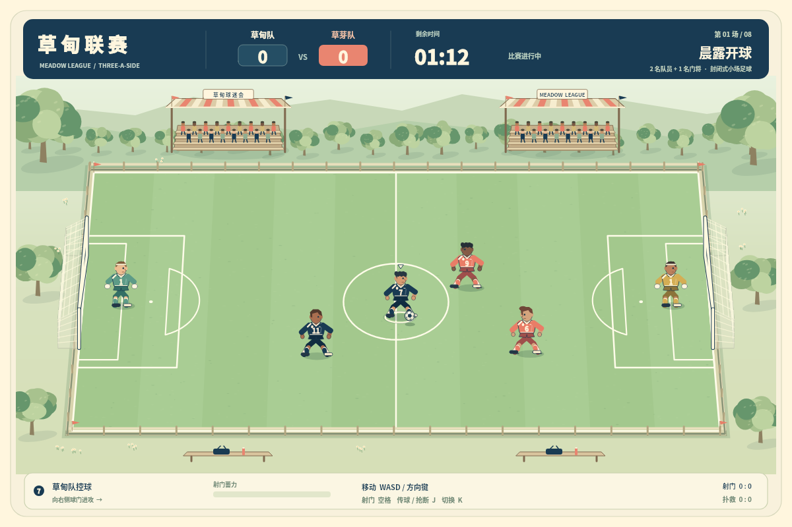
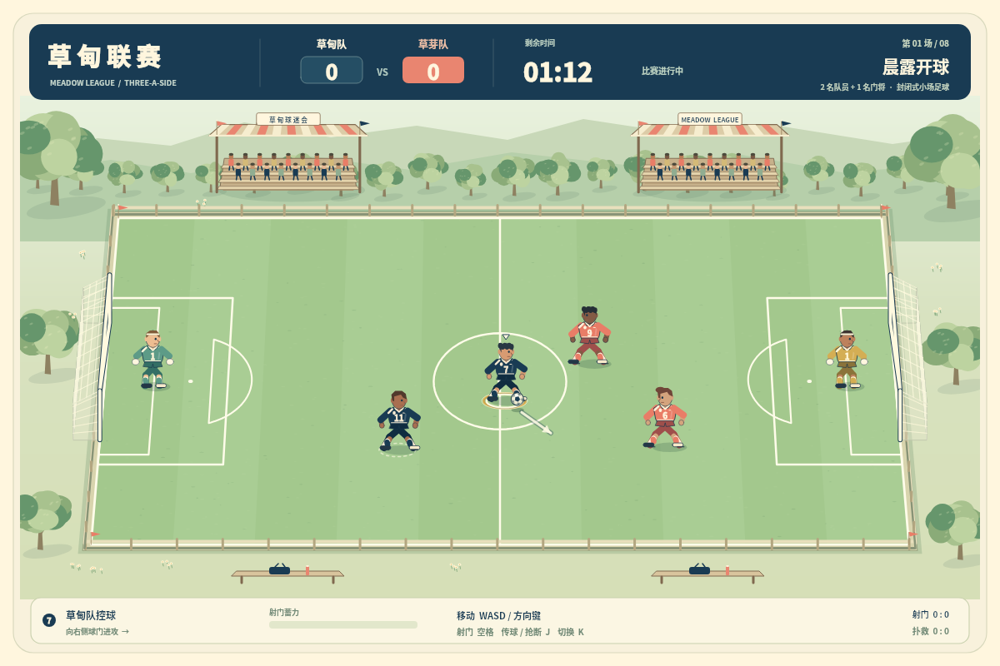

← 回到球场40 / MEADOW LEAGUE / V2 PREVIEW
先拉开，再出脚。
带球吸引一名防守者，传给另一侧接应队友，再寻找射门窗口。失球后切人补位，重新争夺空间。
这是一款承接未完成项目的原创 3 对 3 围场足球预览。恢复项目原文参考 PES 风格，具体代际未指定；它没有完整十一人制、职业球员或 PES 的全部动作与战术。
保留已有画面，让信息更清楚

恢复版渲染：保留草地、看台、六名球员和完整球场。
v2：金环球权、白环控制、虚线接应；短箭头与实际出脚方向共用规则。同一真实引擎状态的离屏绘制，不是网页截图。箭头显示方向，不保证进球。
两个选择，都能创造机会
- 边路推进再内切：让追防跟到一侧，面向右门短蓄力出脚。
- 传球转移：J 传给唯一另一名外场队友，控制自动切换；等球接到再射。传球路线上的对手可以拦截。
同一首场、每 300 ms 决策的公开输入：传接 3:1（12 次传球），边路 6:3（0 次传球）。这是自动模拟，不是人工体验评分。原脚本雨后 3:3，传接路线能赢，八场参数没有因此削弱。
本轮只做必要修正
- 修复守门近目标减速被归一化抹除的问题；双方同规则。
- 球权、控制、接应与出脚方向可区分，球权文字匹配真实球衣号码。
- 小屏保留整个球场，裁去画布重复信息；比分与按钮留在网页层。
- 独立 v2 存档，刷新恢复先暂停；保留八场、重赛和解锁。
参考的是取舍，不是全套足球系统
官方 PES 资料中的传后跑位、控制空间、力量与精度取舍，以及切人防守，让“一脚之前的判断”有价值。本作浓缩这条思路，只有两名外场队员与自动门将；没有独立二过一、十一人阵型、越位、犯规、界外球或点球。
以上资料用于核对机制价值，不能反推本项目特定参考了 PES 2019 或 eFootball 2022。
已验证与尚未验证
本地引擎 45 组、存档 122 断言、实际控制器事件替身 73 组、v2 专项 6 组通过。100 ms DOM 输入完成八场自然胜利与解锁。300 ms 引擎输入也完成八场，但同节奏 DOM 试跑第三场失败；两种测试不混称。
仍有熟练脚本打出 15:0，AI与难度未达到成熟足球游戏水平。本轮不据此无限调参。公网浏览器完整比赛、小屏布局、真实多点触控与人工手感仍需后验。
完整范围、比分与验收清单 · 进入 v2 球场 →